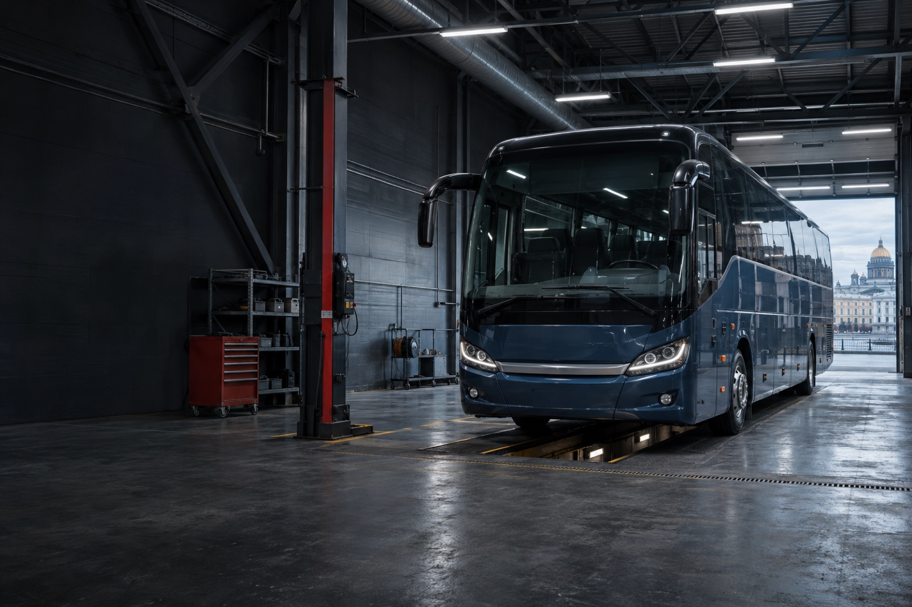

Обслуживание
Плановое ТО с учётом пробега, регламента и состояния машины.

Услуги
Подбор услуги
С чего начать
Запишите текущий пробег и дату последнего ТО. Если есть сервисная книжка, подготовьте её.
Уточните, когда возникает неисправность. Например, после запуска, при разгоне или под нагрузкой.
Если неисправность уже нашли, назовите узел и подготовьте заключение, если оно есть.
Как проходит визит
Приёмка
Уточняем, какая техника приехала, с какой задачей и когда машина нужна на линии.
Диагностика
Если есть симптомы, сначала выясняем, при каких условиях они возникают, и обсуждаем осмотр.

Работы
По результатам осмотра можно обсудить работы, детали и время, которое понадобится сервису.
Выезд
Перед выдачей уточняем, что сделано и когда можно забрать транспорт.


Для автопарка
Если нужно обсудить обслуживание нескольких машин, подготовьте список техники, пробег и даты, когда её можно снять с линии.
Обсудить автопаркПеред визитом
Марку и модель, пробег и краткое описание задачи. Если уже проводили диагностику, пригодятся её результаты.
Предварительную оценку согласуют по задаче. Если причина неисправности неизвестна, сначала потребуется осмотр.
Перед выездом лучше согласовать свободное время и уточнить въезд на территорию.